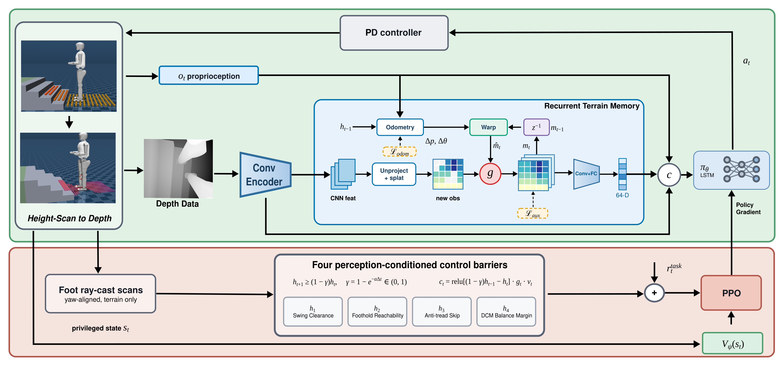

Perceptive locomotion for humanoids must remain safe under uncertainty in both terrain perception and payload. Domain randomization can improve robustness but gives no explicit signal for when the policy's estimate is unreliable, while existing control-barrier-function (CBF) approaches typically apply a fixed safety margin regardless. We introduce DUALGuard, which adapts discrete-time CBF margins online using the discrepancy between the privileged critic state and the policy's onboard estimate, within a single asymmetric actor-critic framework that needs no post-training distillation. The uncertainty signal is stop-gradient decoupled from policy learning, and is used to tighten foothold and clearance margins under uncertain terrain perception, and balance margins under unknown payloads. A persistent terrain belief combines depth observations with a forward-kinematics-propagated prior to stay robust to occlusions. We demonstrate zero-shot sim-to-real transfer on a full-scale humanoid (1.72 m, 75 kg) trained with payloads up to 10 kg, achieving 95.6–98.2% stair-traversal success across the design range and 83.8% when stress-tested with a 20 kg payload on unseen stair geometry.
....

DUALGuard training pipeline.
Stair ascent: free-moving vs. carrying a payload, side by side. The onboard depth scan (red points) and the foothold/swing-trace overlay are drawn live as the robot walks; each foothold lands well inside the tread, consistent with the landing-foothold-reachability barrier.
Stair descent: free-moving vs. carrying a payload, side by side. Same overlay, viewed from the front as the robot descends the staircase.
Same configuration as training. Covers on, climbing a staircase with the same riser height and tread depth on every step, on a rigid wooden floor.
Stress test. Covers removed (shifting total mass off the trained distribution), a 10 kg payload carried in the arms, and a staircase with a different riser height and tread depth on its ascending side than on its descending side.
@inproceedings{dualguard2027,
title = {DUALGuard: A Discrepancy-driven Uncertainty-Adaptive Locomotion Framework to Guard Humanoids During Stair Walking},
author = {TBD},
booktitle = {IEEE International Conference on Robotics and Automation (ICRA)},
year = {2027}
}